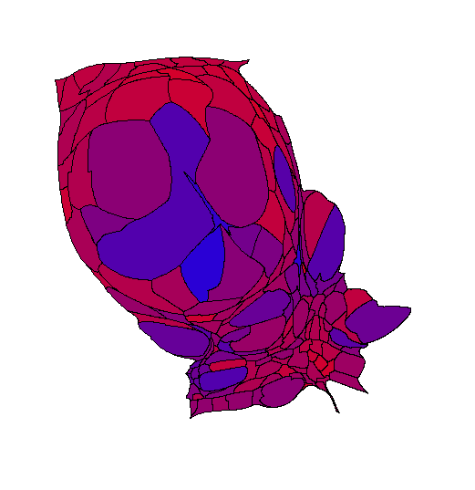
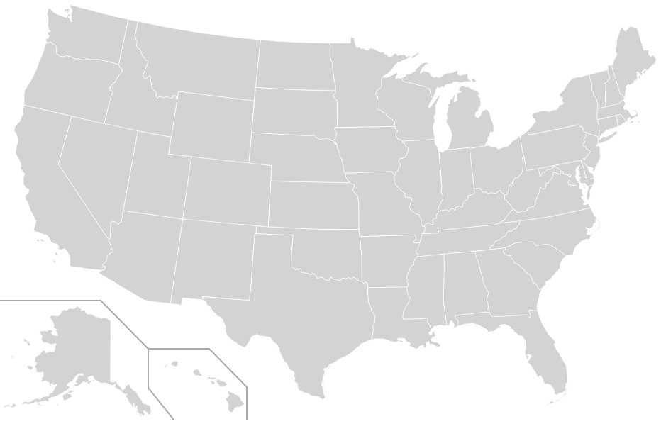
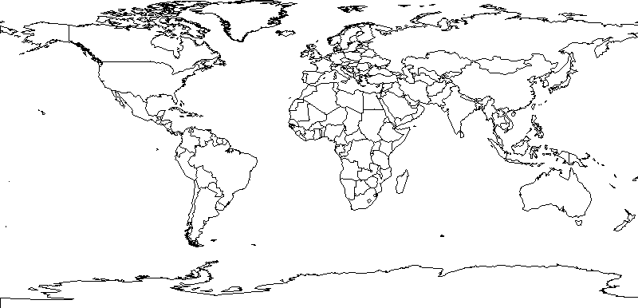

All projects should have a list of things that need to be done. These are not in any particular order. Images and such are taken from various manual experiments, or even entirely different projects, and are intended only to provide some stimulus for thought.
Packaging. I'm an old Unix guy. I've been downloading bits and pieces of code, compiling and linking them, and getting things in more-or-less the right place to function for a very long time. OTOH, I appreciate installers that automatically figure out the dependencies and take care of all the details. All of that needs to be sorted out.

Choropleth capabilities.
More sophisticated coloring schemes are orthogonal to the
cartogram and prism map construction.
The figure to the right is
a cartogram of the state of Georgia
where the size of each county represents the total number of votes
cast for presidential candidates in 2012.
The color indicates the percentage of votes
cast for the Democratic or Republican candidates for president.
Pure blue indicates 60% or more of the vote for
the Democratic candidate;
pure red indicates 60% or more of the vote for
the Republican candidate;
various shades of purple attempt to show
counties falling between those extremes.
The data file format used by cartogram.pl
allows arbitrary 24-bit colors to be used for each polygon.
The interesting and challenging parts are automating things.

Alaska and Hawaii.
For noncontiguous cartograms
or for flat choropleth maps
there's no reason not include Alaska and Hawaii
in some arbitrary positions
when all of the other states are included.
The example to the right is a generic image file from
Wikimedia Commons.
Compositing independently-generated maps
(and possibly) separator lines
should not be overly difficult.
For contiguous cartograms and prism maps
things are more complicated.

World Maps.
The system has US assumptions about states and counties
coded in in all sorts of places.
That doesn't have to be true.
Shapefiles for the entire world's top-level administrative areas
are readily available.
Huge amounts of global data are available
(see the Worldmapper project for lots of examples).
The image to the right was drawn by a small piece of Perl code
using the same add-on modules as cartogram.pl and
an open-source shapefile with fairly detailed polygons.
As I read the Worldmapper web site,
they are no longer funded,
so don't generate new cartograms.
For that matter, all sorts of different administrative areas. Provinces in China. Lieutenancy areas in the United Kingdom. Congressional districts in the United States. One of my personal research interests is in urban vs rural areas in the United States. The Census Bureau has finally started doing some data, including shapefile outlines, for urbanized areas and zip codes.
There ought to be some options for map clean-up. For example, the non-contiguous cartogram code includes "hints" for drawing the interior state polygon in a better position. The hints don't work well when applied to states with multiple polygons when some of those polygons are small relative to the "main" polygon. There are a variety of possible approaches: recognize and suppress the small polygons entirely, recognize the small polygons and not apply the hints, etc.
Alternate output formats. The software produces only raster graphics. It would be good to have some sort of vector graphics so that truly large images could be generated. PDF and SVG would seem to be the fairly obvious choices, one for print and one for the Web. More exotic formats are possible. Prism maps, being inherently 3D in nature, might be better if they can be manipulated in space. The example to the right is a crude one done using WebGL, Javascript, and a version of the three.js library to illustrate the concept with Arizona, New Mexico, and Utah state outlines [1]. Click-and-drag with the mouse should cause the 3D scene to rotate. The mouse wheel should allow zooming in or out. (If you zoom out too far the objects will disappear.) If a black line appears across the bottom of the scene view, it's an artifact that appears in some browsers some of the time.
Labels. So many possible labels. Titles. Color codes. Text overlaying the image to identify features. Like the mesh and overlay layers, there ought to be a label layer of some sort. The problem, of course, is that the whole thing starts to look like a commercial mapping product. There seem to be sufficient mapping applications around. I really only wanted to do a fairly narrow set of thematic maps without the bells and whistles.
GUI. There's no practical reason why there couldn't be a graphical user interface wrapped around the command-line tools. There's an argument hidden in there for redoing the whole thing in Python rather than Perl [2]. One of the things that Guido did right, that Larry hasn't, is to require some sort of GUI toolkit as part of the standard library. Tcl/Tk may not be a contemporary toolkit, but at least it's something.
Cartograms as a service. The data for generating a cartogram is pretty small, especially if the necessary map outlines can be generated on the fly. Data and all of the options could be submitted through a simple Web interface, with the resulting cartogram returned by some mechanism. As a free service there would need to be limits on size, complexity, and frequency just to limit the number of CPU cycles that get consumed.
[1] Close observers will notice problems with the transparency. WebGL is a fast 3D renderer rather than a ray-tracing renderer like POV-Ray. The basic approach for real-time 3D rendering software is to chop the objects in the scene into smaller pieces, often triangles, and render them all quickly. The order in which those small pieces are drawn depends on their distance from the camera. There is a substantial history of problems with three.js, WebGL, and the rendering order. ↩
[2] Equivalents for the Perl GD and Geo::Shapefile modules exist in Python. The portions of the GD::Polyline module that are used in cartogram.pl could be rewritten, as the source code is available. If I were undertaking such an endeavor, I'd think about restructuring data so that NumPy could be used in places. ↩
Next: Eye Candy (Video)
Last updated Mar 4, 2018